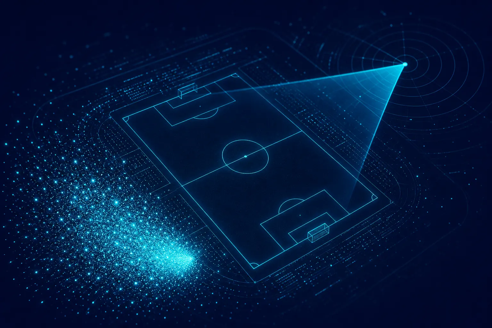

Mga niche fandom: kung bakit ang maliliit na komunidad ang nagtatakda ng tono

Ang mga niche fandom ay maliliit at lubos na engaged na komunidad na nakaayos sa paligid ng isang pinagsasaluhang hilig, mula women's football hanggang sa iisang game franchise. Madalas silang nalalampasan ng malawak na listening dahil mababa ang kanilang volume. Pero hinuhubog nila ang wika, panlasa at opinyon matagal bago makahabol ang mainstream. Ang paghahanap sa kanila ay nangangahulugang pakikinig para sa tindi at pinagsasaluhang bokabularyo, hindi lang volume.
Bakit minamaliit ng mga brand ang mga niche fandom?
Kabilang sa mga tensyong naririnig namin mula sa mga marketer ang isang tahimik na pag-amin: minamaliit nila ang mga niche fandom. Ang women's football ang halimbawang pinakamadalas lumalabas. Sa loob ng maraming taon, maliit ang usapan ayon sa volume, kaya mababa ang ranggo nito sa mga dashboard at sumunod ang mga budget. Naroon na ang mga fan mula pa noon, organisado, malinaw magsalita at tapat. Nadatnan ng mga brand na huling dumating na buo na ang kultura, at hindi laging palakaibigan sa mga huling dumating.
Ang pinag-uugatang pagkakamali ay ang pagturing sa volume bilang kahalagahan. Sa mga fandom, mas mahalaga ang tindi kaysa sa laki, dahil lumilikha ang matitinding komunidad ng wika, reference at inaasahang kalaunang ginagamit ng mas malalaking audience.
Ano ang nagpapaiba sa isang fandom signal?
Mga kahulugan
- Fandom: komunidad na tinutukoy ng tuloy-tuloy at pinagsasaluhang hilig, na may sariling pamantayan at in-joke.
- Tindi: ang lalim ng emosyon at engagement sa bawat post, gaya ng mahahabang reply, debate at malikhaing output.
- Pinagsasaluhang bokabularyo: mga termino, palayaw at reference na mga insider lang ang gumagamit. Isang malakas na palatandaan ng tunay na komunidad.
- Crossover: wika o reference ng fandom na lumalabas sa pangkalahatang usapan. Madalas ang unang senyales ng mainstream adoption.
Karaniwang mababaw at malawak ang mainstream na usapan: maraming tao, banayad na damdamin. Makitid at malalim ang usapan sa fandom: mas kaunting tao, malalakas na damdamin, maraming detalye. Pinapatag ng sentiment scoring ang pagkakaiba. Binabasa ng concept engine ng SOMIN, na nagpapatakbo sa Somonitor, ang mga tono at emosyon gaya ng pagmamalaki, pagiging mapagprotekta at hinaing, at iyon ang nagpapakita sa mga fandom signal.
Paano mahahanap ang mga fandom na hindi pa ninyo alam?
- Magsimula nang malawak, saka hanapin ang densidad. Pakinggan ang inyong kategorya at hanapin ang mga kumpol kung saan hindi pangkaraniwang malakas ang emosyon kumpara sa volume.
- Sundan ang bokabularyo. Kapag nakakita kayo ng terminong hindi ninyo naiintindihan, isa iyong pintuan. Hanapin ito at tingnan kung saan ito nananahan.
- I-map ang mga katabing hilig. Madalas fan din ng mga kaugnay na bagay ang mga fan ng isang bagay. Maaaring may overlap ang mga fan ng women's football sa partikular na musika, fashion o adbokasiya.
- Bantayan ang crossover. Kapag lumalabas na ang mga reference ng fandom sa pangkalahatang usapan, nagsasara na ang pagkakataon para sa maaga at tunay na pakikilahok.
Paano dapat makilahok ang isang brand nang hindi kinaiinisan?
Mapagprotekta ang mga fandom. Napapansin nila kapag dumarating ang isang brand dahil naging kaakit-akit na ang mga numero. Naaalala rin nila kung sino ang maagang dumating at sineryoso sila. Ilang prinsipyo:
- Makinig nang mas matagal kaysa sa tila kailangan. Unawain ang kasaysayan, ang mga hinaing at ang mga bayani bago kayo magsalita ng kahit ano.
- Tumugon sa talagang gusto ng mga fan. Madalas ito ay visibility, access o pagiging patas, hindi merchandise.
- Gamitin nang maingat ang mga salita ng komunidad. Mas masama ang hiram na slang na hindi mahusay ang paggamit kaysa sa simpleng wika.
- Magbigay muna, saka humingi. Suportahan ang bagay na mahalaga sa mga fan bago hilingin sa kanila na pahalagahan kayo.
Isang halimbawang pinag-aralan
Isipin ang isang sports drinks brand na sinusuri ang mga opsyon nito sa sponsorship. Inilalagay ng malawak nitong listening ang women's football na mas mababa nang malaki kaysa sa men's game ayon sa volume. Iba ang ipinapakita ng concept view ng Somonitor: may dalang mataas na pagmamalaki at mataas na pagkadismaya ang usapan tungkol sa women's football, na nakatuon ang pagkadismaya sa mahinang broadcast access at kakulangan ng kit na idinisenyo para sa kababaihan. Mayaman ang pinagsasaluhang bokabularyo. Tumataas ang crossover sa pangkalahatang usapan tungkol sa sports.
Hindi iyon dahilan para basta magdikit ng logo sa isang team. Dahilan iyon para pondohan ang bagay na ikinadidismaya ng mga fan, marahil mas mahusay na access sa mga laban o maayos na idinisenyong kit, at sabihin ito nang diretso. Dumarating ang brand bilang kontribyutor, hindi turista. Hango ang ideya sa ebidensya, at matutunton ang bawat hakbang pabalik sa mga post na nabasa ng team.
Para sa kung paano hinubog ng audience evidence ang approach ng isang youth-focused na brand, kapaki-pakinabang na karagdagang babasahin ang SM Universe case study sa site ng SOMIN.
Saan nagtatagpo ang Gen Z at ang mga fandom?
Maraming mas batang audience ang bumubuo ng pagkakakilanlan sa paligid ng mga fandom sa halip na demographics. Kaya isa ang fandom listening sa pinakamahusay na paraan para maunawaan ang Gen Z nang hindi sila ini-stereotype. Mas malalim naming tinalakay ito sa pag-segment ng Gen Z ayon sa usapan, hindi taon ng kapanganakan. Para sa kultural na interpretasyon ng mahahanap ninyo, ang aming sister consultancy na Mindfuse ay nagde-decode ng mga persona, tensyon at cultural code sa buong Southeast Asia.
Tinalakay din namin ang fandom-led strategy kasama ang mga practitioner sa Marketing Mondays, ang komunidad ng marketing sa Singapore na ang lingguhang show ay nagde-decode ng isang totoong signal bawat episode. Magagandang episode ang mga fandom dahil madalas nakikita na ang signal bago pa ang volume.
Paano susukatin ang isang fandom sa paglipas ng panahon?
Subaybayan buwan-buwan ang apat na bagay: ang volume ng mga post sa komunidad, ang mga nangingibabaw na emosyon, ang lakas ng pinagsasaluhang bokabularyo, at ang bilis ng crossover sa pangkalahatang usapan. Kung nakikilahok kayo, magdagdag ng ikalima: kung paano pinag-uusapan ng komunidad ang inyong brand. Ang iginagalang na kontribyutor ay pinag-uusapan nang may init at tiyak na detalye. Ang turista ay pinag-uusapan nang may hinala, o hindi pinag-uusapan. Nakikita ang pagkakaibang iyon sa mga post matagal bago ito lumabas sa anumang sales figure.
Ang mga fandom ang mga early adopter ng kahulugan sa market. Pakinggan muna sila at maririnig ninyo ang hinaharap ng mainstream.
Checklist: may fandom bang nalalampasan kayo?
- Tinitingnan ba ninyo ang tindi ng emosyon, hindi lang ang volume?
- Sinisiyasat ba ninyo ang hindi pamilyar na bokabularyo?
- Na-map na ba ninyo ang mga katabing hilig ng inyong audience?
- Sinusubaybayan ba ninyo ang crossover sa mainstream na usapan?
- Alam ba ninyo kung ano ang gusto ng mga fan bago pagpasyahan kung ano ang iaalok?
Madaling balewalain ang maliliit na komunidad at magastos matuklasan nang huli. Ang pakikinig para sa tindi, sa pamamagitan ng mga tool gaya ng strategy layer ng SOMIN at ng community radar ng Somonitor, ay nagpapanatili sa kanila sa inyong mapa.
Mga madalas itanong
Gaano kaliit ang isang fandom at mahalaga pa rin?
Walang minimum. Ang mahalaga ay ang tindi, pinagsasaluhang bokabularyo at impluwensya sa mga katabing audience. Kayang hubugin ng isang maliit at malinaw magsalitang komunidad kung paano pinag-uusapan ng mas malaking audience ang isang kategorya.
Kaya bang awtomatikong matukoy ng Somonitor ang mga fandom?
Inilalabas ng Somonitor ang mga kumpol kung saan hindi pangkaraniwang malakas ang emosyon kumpara sa volume at kung saan umuulit ang natatanging bokabularyo. Kailangan pa rin ng isang tao na basahin ang mga post at husgahan kung tunay itong komunidad at kung paano makikilahok.
Niche pa rin ba ang women's football?
Malaki na ang inilaki ng usapan tungkol sa women's football, at sa maraming market ay hindi na ito niche. Nananatili itong kapaki-pakinabang na halimbawa kung paano kayang maliitin ng volume-based listening ang isang matinding komunidad hanggang sa tumawid ito sa mainstream.
Humiling ng early access
Binabantayan ng Somonitor ang mga usapan sa paligid ng inyong brand, mga kakumpitensya at kategorya araw at gabi, saka sinasabi sa inyo kung ano ang nagbago, bakit ito mahalaga at aling mga post ang nagpapatunay nito. Nakatayo sa concept engine ng SOMIN.
Mag-email sa ask@somonitor.ai →